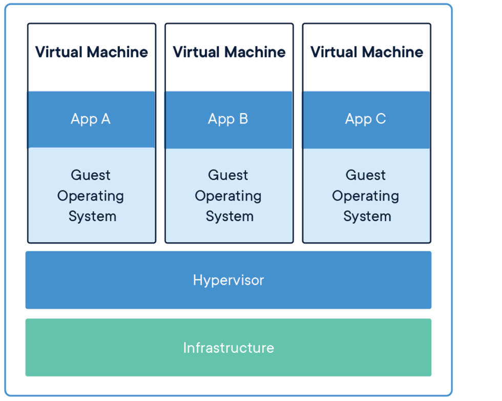
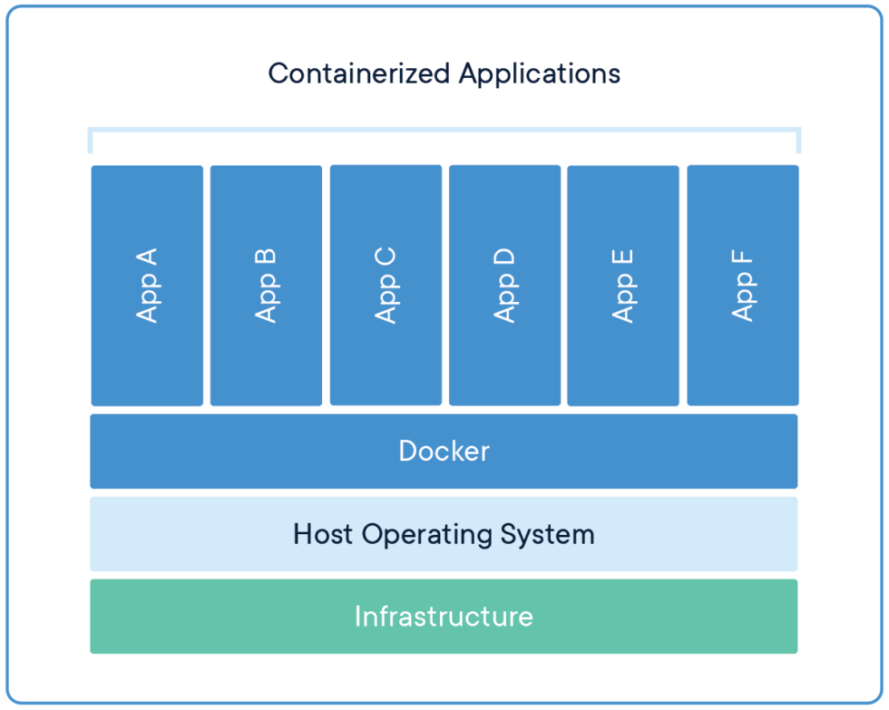
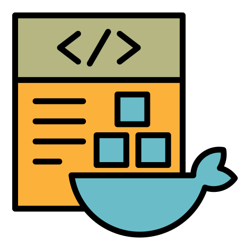
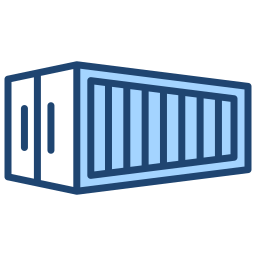

Containers (in Docker)*
Presentation Instructions
- Navigate: ↑ ← ↓ →
- Open presenter’s view with notes (presenter’s version only): S
- Enter/exit bird’s-eye view: ESC
Plan
- What containerization is
- Why care
- How to get started
What?
- Container
-
a standard unit of software that packages up code and all its dependencies so the application runs quickly and reliably from one computing environment to another.
What?
- Docker
-
a (popular) freemium containerization platform.
Includes:
- Docker Desktop
- Docker Hub
- Docker Engine
- Docker Compose
What?
- Docker
-
a (popular) freemium containerization platform.
Includes:
- Docker Desktop
- Docker Hub 👈
- Docker Engine 👈
- Docker Compose
Why?
Career POV:
- Docker/Containers are ubiquitous => (usually) good for your resume*
- Docker/Containers are integral to our/others’ tech stack, but uni’s often don’t teach this => opportunity to learn
Why?
Practical POV:
- Separation of responsibility
- Workload portability
- Application isolation
Why?



TLDR So Far
Containers:
- ubiquotous
- shippable
- isolated
- cross-platform
- light
- free
Docker:
- makes containers easier
- popular
- free for personal use
How?
Workflow: from a Dockerfile
 Dockerfile
docker
build
Docker Image
docker
run
Docker Container
How?
Workflow: from a Registry
Docker Registry
docker
pull
Docker Image
docker
run
Docker Container
Docker Image
How?
Docker Image: Naming
- Name structure:
registry/repository/image_name:tagregistry- Is registry where the image is hosted; when skipped, defaults todocker.io, i.e. the Docker Hubrepository- Is repository where the image is hosted; not needed for Docker Official Imagesimage_name- Is the name of the image itself.tag- Is a tagged “state” of that image that the creator has deemed useful.
How?
Docker Image: Naming
- Name structure:
registry/repository/image_name:tag
- For example:
- Docker Official Images skip
repositoryname; considered common starting points and more secure - You can see Docker Hub repositories/images via browser here
How?
Docker Image: List
How?
Docker Image: Pull
Now try pulling (== downloading) this Alpine Linux image from the Docker Hub registry:
Because docker.io is the default, this would do the same:
Once pulled, you have this image locally, so if you try pulling again, it won’t download (unless the image changed in the registry).
How?
Docker Image: Delete
Note that docker images lists images both by repo, tag, and image ID (which is the hash for the last layer). You can delete an image in various ways.
Try this (by image name):
OR this (by beginning characters that uniquely match an IMAGE ID):
Then check your docker images again to confirm deletion:
How?
Docker Image: Login
Note that, if we were pulling from a private registry, we’d likely have to login first:
Then pull from that registry:
Docker Container
How?
Docker Container
Use case: Setting up a portable and reproducible DS development environment.
Since we work in DS/ML, let’s download this Python scientific stack image from the official Jupyter Docker Stacks:
And, as usual, see that it’s there:
How?
Docker Container: Run
The syntax for command to start a container:
How?
Docker Container: Run Cont’d
Now, assuming port 8888 on your host was not already taken, we should see the http://127.0.0.1:8888/lab?token=... URL in the CLI logs, and navigate to that address in the browser.
How?
Docker Container: Stop
To (gracefully) stop a container from running:
Just like with Docker images, containers can be idenfied with either a full container name or a full or partial container ID (with unique matching).
Your turn! Find the ID and/or a name of your Jupyter container and stop it. Check via docker ps that it is no longer running.
How?
Docker Container: Stop Cont’d
Note that, if there are any issues, like with a real PC, you can force shut down your container like so:
The difference with stop is kill is akin to using the force shutdown button on your PC.*
Because this particular container was a Jupyter Server, we could have also CTRL + C in the live logs (STDOUT) to close the session down.
*in UNIX terms, stop attempts to SIGTERM first, before doing SIGKILL; kill just SIGKILL’s immediately
How?
Docker Container: Stop Cont’d
How?
Docker Container: Stop Cont’d
How?
Docker Container: Stop Cont’d
To delete a stopped container for good:
Try deleting the Jupyter Server container we stopped earlier.
How?
Docker Container: Share Volumes
Let’s complicate things a bit and learn some additional flags and other commands along the way.
Use case extension: share our local volume so that we can access it from inside a container + persist file changes!
How?
Docker Container: Share Volumes Cont’d
How?
Docker Container: Share Volumes Cont’d
docker run -it --rm \
--user "$(id -u)" --group-add users \
-p 8888:8888 \
-v "${PWD}"/:/home/jovyan/work \
quay.io/jupyter/scipy-notebook:python-3.11.9 -itmakes the container interactive--rmauto-removes the container after it gets stopped or killed--usersupplies container’s user ID"$(id -u)"- our host user ID; will be container user’s user ID--group-addadds a new user group. Jupyter Stacks Docs tell us to do that.
How?
Docker Container: Share Volumes Cont’d
docker run -it --rm \
--user "$(id -u)" --group-add users \
-p 8888:8888 \
-v "${PWD}"/:/home/jovyan/work \
quay.io/jupyter/scipy-notebook:python-3.11.9 - We use the same port mapping and image as before
- The
-vflag maps host to container volume. It uses the samehost:guestsyntax. "${PWD}"- path of the current working directory (on host)
How?
Docker Container: Share Volumes Cont’d
docker run -it --rm \
--user "$(id -u)" --group-add users \
-p 8888:8888 \
-v "${PWD}"/:/home/jovyan/work \
quay.io/jupyter/scipy-notebook:python-3.11.9 Important
Be careful! Mounting makes the Docker container think these files are its own. Deleting a file inside the container WILL delete it on the host! That being said, mounting a file can be really useful for debugging and development.
cd into a safe directory to mount and run this monster!
How?
Docker Container: Execute Commands
How?
Docker Container: Execute Commands Cont’d
Your turn! Let’s see file persistence in action:
- Bash into your live Jupyter Server container
- Use
cdandlscommands to check that your host directory mounted into the container touchto make a test file from inside a container- Stop your container
- Remove your container for good
- On your host, make sure that the file you created persisted
- Feel good
Dockerfile
How?
Dockerfile
So far: pulled images someone else made and instantiated them into containers
Up next: build our own images using Dockerfiles
How?
Dockerfile: Structure
TLDR: Dockerfile == fancy text file with layered instructions
Longer version:
- By convention/expected default, named
Dockerfile. But can be whatever. - Each line’s format:
- Each line creates a new “layer”; from top to bottom (i.e. order matters)
- Full list of Dockerfile commands here
How?
Dockerfile: Structure Real Example
# Copyright (c) Jupyter Development Team.
# Distributed under the terms of the Modified BSD License.
ARG REGISTRY=quay.io
ARG OWNER=jupyter
ARG BASE_CONTAINER=$REGISTRY/$OWNER/docker-stacks-foundation
FROM $BASE_CONTAINER
LABEL maintainer="Jupyter Project <jupyter@googlegroups.com>"
# Fix: https://github.com/hadolint/hadolint/wiki/DL4006
# Fix: https://github.com/koalaman/shellcheck/wiki/SC3014
SHELL ["/bin/bash", "-o", "pipefail", "-c"]
USER root
# Install all OS dependencies for the Server that starts
# but lacks all features (e.g., download as all possible file formats)
RUN apt-get update --yes && \
apt-get install --yes --no-install-recommends \
# - Add necessary fonts for matplotlib/seaborn
# See https://github.com/jupyter/docker-stacks/pull/380 for details
fonts-liberation \
# - `pandoc` is used to convert notebooks to html files
# it's not present in the aarch64 Ubuntu image, so we install it here
pandoc \
# - `run-one` - a wrapper script that runs no more
# than one unique instance of some command with a unique set of arguments,
# we use `run-one-constantly` to support the `RESTARTABLE` option
run-one && \
apt-get clean && rm -rf /var/lib/apt/lists/*
USER ${NB_UID}
# Install JupyterLab, Jupyter Notebook, JupyterHub and NBClassic
# Generate a Jupyter Server config
# Cleanup temporary files
# Correct permissions
# Do all this in a single RUN command to avoid duplicating all of the
# files across image layers when the permissions change
WORKDIR /tmp
RUN mamba install --yes \
'jupyterlab' \
'notebook' \
'jupyterhub' \
'nbclassic' && \
jupyter server --generate-config && \
mamba clean --all -f -y && \
npm cache clean --force && \
jupyter lab clean && \
rm -rf "/home/${NB_USER}/.cache/yarn" && \
fix-permissions "${CONDA_DIR}" && \
fix-permissions "/home/${NB_USER}"
ENV JUPYTER_PORT=8888
EXPOSE $JUPYTER_PORT
# Configure container startup
CMD ["start-notebook.py"]
# Copy local files as late as possible to avoid cache busting
COPY start-notebook.py start-notebook.sh start-singleuser.py start-singleuser.sh /usr/local/bin/
COPY jupyter_server_config.py docker_healthcheck.py /etc/jupyter/
# Fix permissions on /etc/jupyter as root
USER root
RUN fix-permissions /etc/jupyter/
# HEALTHCHECK documentation: https://docs.docker.com/engine/reference/builder/#healthcheck
# This healtcheck works well for `lab`, `notebook`, `nbclassic`, `server`, and `retro` jupyter commands
# https://github.com/jupyter/docker-stacks/issues/915#issuecomment-1068528799
HEALTHCHECK --interval=3s --timeout=1s --start-period=3s --retries=3 \
CMD /etc/jupyter/docker_healthcheck.py || exit 1
# Switch back to jovyan to avoid accidental container runs as root
USER ${NB_UID}
WORKDIR "${HOME}"How?
Dockerfile: Structure Real Example Cont’d
Define build-time variables:
Define base image layer (examples):
How?
Dockerfile: Structure Real Example Cont’d
How?
Dockerfile: Structure Real Example Cont’d
Label a container’s port (it’s localhost) as relevant to a future user:
How?
Dockerfile: Structure Real Example Cont’d
Copy files/directories (from host -> future container):
How?
Dockerfile: Your First Dockerfile
Use case extension: Use Dockerfile to customize the image we used previously.
Make a new directory (or just use an existing one that is empty) and create a file named Dockerfile there. (Keep the file open in your editor.)
Let’s build a simple Dockerfile that extends our original Jupyter container layer by layer now.
How?
Dockerfile: Your First Dockerfile Cont’d
To motivate our use case, run the same Jupyter image we used earlier, from that directory:
Go to your Jupyter session via a web browser and create a new notebook (which should persist even if we delete the container later).
How?
Dockerfile: Your First Dockerfile Cont’d
In that notebook, in the first cell, import the pandas package and make a test dataframe. No surprises there.
Let’s say we want to use
plotlyfor our data visualization. In a second cell, try:Then save this notebook.
How?
Dockerfile: Structure Cont’d
Uh-oh! No plotly! We could install it via the usual means (e.g. pip or conda and build a requirements.txt). But let’s install it via poetry instead! It’s becoming a more popular way to manage Python dependencies and packages; a good tool to learn. Plus, it’s the default for our team.
How?
Dockerfile: Structure Cont’d
How?
Dockerfile: Structure Cont’d
poetryinstantiates apyproject.toml: keeps track of your python dependencies.- When we
adddependencies, generates apoetry.lockfile: pins our exact dependency versions - Great to manage dependencies robustly!
- Plan: manage all our Python dependencies and persist them via these Poetry files; exploit volume-sharing with the host to persist.
- Trick: commit Dockerfile +
poetryfiles to version control => achieve full container replicability on our/others’ machines!
How?
Dockerfile: Structure Cont’d
How?
Dockerfile: Structure Cont’d
Once the container is removed, the steps of us installing poetry and plotly are gone! Let’s fix that! docker stop the Jupyter container. Then go back to the Dockerfile you created:
- First, let’s add our starting point. Copy the name and the digest for the Jupyter image we’ve been using:
How?
Dockerfile: Structure Cont’d
How?
Dockerfile: Structure Cont’d
So far, this is our Dockerfile:
FROM quay.io/jupyter/scipy-notebook@sha256:3b8d0f5253e3acb5395bee6638bf51762b84e159f59b27c46d0b9cd27fac2306
RUN pip install poetry==1.8.2 \
&& poetry config virtualenvs.create false
COPY poetry.lock pyproject.toml ./work/
RUN cd work \
&& poetry install --no-interaction \
&& rm poetry.lock pyproject.tomlHow?
Dockerfile: Structure Cont’d
Caching strategy:
- Docker is smart. Using cache, from a
Dockerfileit will only rebuild from the last unchanged layer. - Conclusion: the more often a layer changes, the lower it should be!
- For debugging/rebuilding without cache:
--no-cacheflag withdocker build
How?
Dockerfile: Build
Remember, to “compile” a Dockerfile into an image we use the build command. Syntax:
About build context:
PATH | URL | -: context you pass. Docker will not recognize anything outside of that context- Can restrict files/directories in the context further via
.dockerignore
How?
Dockerfile: Build Cont’d
How?
Dockerfile: Run
Best Practices
- Dockerfile:
- Using the
sha256hash is a good way to make the image reference more replicable - Combine and minimize the number of layers
- Think of the layer order strategically
- Rule of thumb: layers you expect to change more often should go towards the bottom of the
Dockerfile
- Rule of thumb: layers you expect to change more often should go towards the bottom of the
- Minimize the build context by using a
.dockerignore.
- For security, avoid using
rootuser if you can
- Using the
Best Practices
- Images:
- Only pull and run images you trust
- Containers:
- Remember: shared volumes are treated as own by a container
Recap
- What containerization is
- Package your apps/models into a portable, reproducible, isolated environment
- Why care
- Good for your resume
- Extends your core ML skills
- Practical
- How to get started
- TLDR: registry/dockerfile -> image(s) -> container(s) + read the docs and practice
- TLDR: registry/dockerfile -> image(s) -> container(s) + read the docs and practice
Further Learning
More Docker:
- Multistage builds
- Microservices
Docker -> Docker Compose -> Kubernetes
References/Resources
1. ^ What are Containers?
2. ^ Understanding containers
3. ^ Use containers to Build, Share and Run your applications
4. ^ What is a registry?
5. ^ Docker Primer (Crowe Internal)
6. ^ Docker Reference documentation
7. ^ Jupyter Stacks Docs: Troubleshooting Common Problems
8. ^ Docker Compose overview
9. ^ Learn Kubernetes Basics